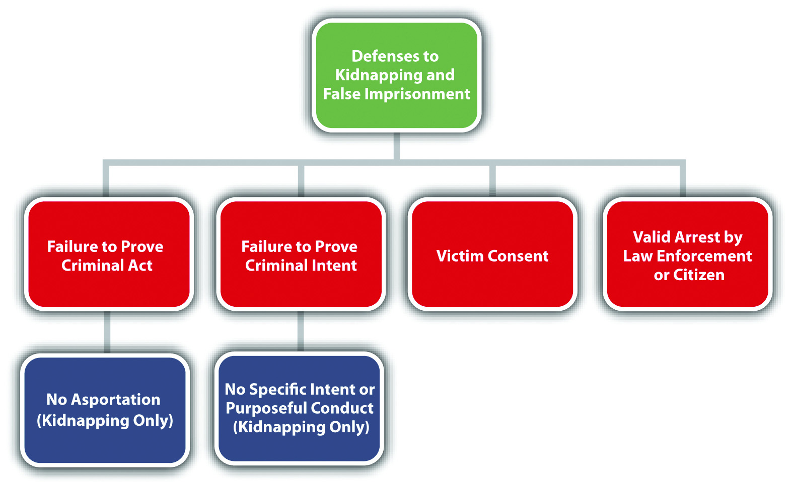
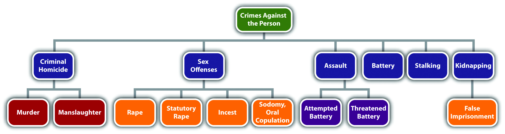

KidnappingUnlawful confinement and movement of a victim without the victim’s consent for the purpose of injuring or harming the victim or another, hiding the victim in secret, obtaining a ransom, committing a separate offense, subjecting the victim to involuntary servitude, or interfering with the purpose of government or political function. and false imprisonmentUnlawful confinement of a victim without consent. are crimes that involve physical restraint and intrude on the liberty interests of victims. In ancient times, kidnapping was used to remove members of royalty from the kingdom for ransom or to implement the overthrow of the existing monarchy. In the United States, high-profile kidnapping cases, such as the Lindbergh baby kidnapping in the 1930s, and the frequency with which organized crime participated in kidnapping led many states to impose the harshest penalties for this offense: the death penalty or life in prison without the possibility of parole.
In modern times, kidnapping is still a serious felony, although the US Supreme Court has held that capital punishment for any crime against an individual other than criminal homicide is unconstitutional. False imprisonment is generally a lesser included offense of kidnapping and is graded lower, as is discussed in Section 10.4.2 "False Imprisonment".
In most jurisdictions, kidnapping has the elements of criminal act, criminal intent, causation, harm, and an attendant circumstance.
The criminal act element required for kidnapping is twofold. First, the defendant must confine the victim.720 ILCS § 5/10-1, http://law.onecle.com/illinois/720ilcs5/10-1.html. Second, in many states, the defendant must move the victim, which is called asportationMovement of an individual or thing from one place to another.. One common issue with the kidnapping criminal act is how far the victim must be moved. In the majority of states, the movement can be slight, as long as it is not incidental to the commission of a separate offense.People v. Dominguez, 140 P.2d 866 (2006), accessed February 24, 2011, http://scholar.google.com/scholar_case?case=3515612573668484000&q= People+v.+Dominguez&hl=en&as_sdt=2,5. Other states do not require asportation when the kidnapping is for ransom.N.R.S. § 200.310, accessed February 24, 2011, http://law.onecle.com/nevada/crimes/200.310.html. Some states have done away with the asportation requirement altogether.N.C. Gen. Stat. § 14-39(a), accessed February 24, 2011, http://law.onecle.com/north-carolina/14-criminal-law/14-39.html. The Model Penal Code requires the movement to be from the victim’s residence, place of business, or “a substantial distance from the vicinity where he is found” (Model Penal Code § 212.1). However, when the kidnapping is for ransom, for the purpose of committing a felony, to inflict bodily injury or terrorize the victim or another, or to interfere with the performance of a governmental or political function, the Model Penal Code does not require asportation, although it does require confinement for a “substantial period in a place of isolation” (Model Penal Code § 212.1).
Joseph breaks into Abby’s home and sees Abby sitting on the couch. A picture window in front of the couch puts Abby in full view of the street and sidewalk. To avoid detection, Joseph grabs Abby off the living room couch and drags her into the bedroom to rape her. Joseph has probably not committed the criminal act element required for kidnapping if the kidnapping statute in Joseph’s state requires asportation. Joseph forcibly confined Abby when he grabbed her. However, his movement of Abby from the couch to the bedroom appears incidental to the crime of rape, which is not sufficient to constitute kidnapping asportation in most jurisdictions.
The criminal intent element required for kidnapping in many jurisdictions is specific intent or purposely to commit the criminal act in order to harm or injure the victim or another, confine or hold the victim in secret,N.R.S. § 200.310(2), accessed February 24, 2011, http://law.onecle.com/nevada/crimes/200.310.html. receive a ransom, commit a separate offense, subject the victim to involuntary servitude, or interfere with the purpose of the government or some political function.Ariz. Rev. Stat. § 13-1304, accessed February 24, 2011, http://law.onecle.com/arizona/criminal-code/13-1304.html.
Review the example in Section 10 "Example of a Case Lacking Kidnapping Act" with Joseph and Abby. Change this example so that Joseph drags Abby to his car, stuffs her into the trunk, and then drives fifteen miles to a deserted field where he thereafter removes her from the trunk and rapes her. Joseph probably has the criminal intent required for kidnapping in most jurisdictions. Joseph committed the criminal act of forcible confinement and asportation with the purpose of raping Abby, which is specific intent or purposely to “commit a separate offense.” Thus if the other elements of kidnapping are present, Joseph can most likely be charged with and convicted of kidnapping, along with the crime of rape.
In jurisdictions that require harm for kidnapping, the defendant’s criminal act must be the factual and legal cause of the harm, which is defined in Section 10 "Kidnapping Harm".
The harm element required for kidnapping in most jurisdictions is confinement and asportation. As stated previously, some jurisdictions have done away with the asportation requirement or do not require asportation when the kidnapping is for ransom.
In many jurisdictions, the attendant circumstance element required for kidnapping is that the confinement or asportation occur against the victim’s will or without the victim’s consent.N.C. Gen. Stat. § 14-39, accessed February 24, 2011, http://law.onecle.com/north-carolina/14-criminal-law/14-39.html. Thus consent could function as a failure of proof or affirmative defense to kidnapping.
Thomas sees Shawna hitchhiking on the side of a busy freeway at night. Thomas pulls over, rolls down the window, and asks Shawna if she wants a ride. Shawna says, “sure,” and climbs into Thomas’s vehicle. Thomas drives away with Shawna in the front seat. Thomas has not committed kidnapping in this case. Although Thomas confined and moved Shawna in his vehicle, the facts do not indicate that he has the specific intent to harm her, obtain a ransom, confine her in secret, or commit a separate offense. In addition, Shawna consented to the confinement and asportation. Thus the attendant circumstance element for kidnapping is also absent and Thomas’s conduct may be perfectly legal (unless engaging in hitchhiking is illegal in Thomas’s state).
Change the example given in Section 10 "Example of a Case Lacking Kidnapping Attendant Circumstance" so that after fifty miles of driving, Shawna asks Thomas to pull over and let her out. Thomas refuses, threatens to harm Shawna if she tries to escape, and continues to drive another twenty miles with Shawna in the front seat. If Thomas acted with the proper kidnapping intent, Thomas might have committed kidnapping in this case. Although Shawna’s original entrance into Thomas’s vehicle and her asportation for the first fifty miles was consensual, once Shawna requested that Thomas pull over and let her out, the confinement or asportation was against Shawna’s will and without her consent. If the trier of fact determines that twenty miles is far enough to constitute sufficient asportation for kidnapping, Thomas could be charged with or convicted of this offense.
Jurisdictions vary as to how they grade kidnapping. The Model Penal Code grades kidnapping as a felony of the first or second degree (Model Penal Code § 212.1). Many states divide kidnapping into degrees or grade it as simple and aggravated.N.R.S. § 200.310, accessed February 24, 2011, http://law.onecle.com/nevada/crimes/200.310.html. First-degree or aggravated kidnapping is generally graded as a serious felony, and second-degree or simple kidnapping is generally graded as a lower-level felony.N.R.S. § 200.310, accessed February 24, 2011, http://law.onecle.com/nevada/crimes/200.310.html. One factor that could mitigate or reduce grading is the defendant’s release of the victim unharmed in a safe place.Ariz. Rev. Stat. § 13-1304(B), accessed February 24, 2011, http://law.onecle.com/arizona/criminal-code/13-1304.html. Factors that could enhance grading are the youth of the victimAriz. Rev. Stat. § 13-1304, accessed February 24, 2011, http://law.onecle.com/arizona/criminal-code/13-1304.html. or the infliction of serious bodily injury.N.C. Gen. Stat. § 14-39, accessed February 24, 2011, http://law.onecle.com/north-carolina/14-criminal-law/14-39.html. When kidnapping takes a victim across state lines, the defendant can also be prosecuted for the additional offense of federal kidnapping.18 U.S.C. § 1201, accessed February 27, 2011, http://www.law.cornell.edu/uscode/18/usc_sec_18_00001201----000-.html.
In many jurisdictions, false imprisonment, also called felonious restraint, is a lesser included offense of kidnapping. This means that the crime of false imprisonment is missing one or two of the kidnapping elements and is graded lower than kidnapping. Often, false imprisonment functions as a partial defense to kidnapping because of the less serious sentencing options. In general, false imprisonment and felonious restraint under the Model Penal Code require confinement but not asportation (Model Penal Code §212.2).18 Pa. C. S. § 2903, accessed February 25, 2011, http://law.onecle.com/pennsylvania/crimes-and-offenses/00.029.003.000.html. In some jurisdictions, false imprisonment requires only general intent or knowingly to commit the criminal act, rather than the specific intent or purposely to commit other crimes, harm the victim, or receive a ransom.720 ILCS § 5/10-3, accessed February 25, 2011, http://law.onecle.com/illinois/720ilcs5/10-3.html. False imprisonment does not require movement and has a lower level of intent, so it is generally graded as a gross misdemeanor or a low-level felony.18 Pa. C. S. § 2903, accessed February 25, 2011, http://law.onecle.com/pennsylvania/crimes-and-offenses/00.029.003.000.html. The Model Penal Code grades felonious restraint as a felony of the third degree (Model Penal Code § 212.2). Factors that can aggravate grading of false imprisonment are the youth of the victim18 Pa. C. S. § 2903, accessed February 25, 2011, http://law.onecle.com/pennsylvania/crimes-and-offenses/00.029.003.000.html. or the use of force or violence to carry out the criminal act.Cal. Penal Code § 237, accessed February 25, 2011, http://law.onecle.com/california/penal/237.html.
Review the case example given in Section 10 "Example of a Case Lacking Kidnapping Attendant Circumstance". Change the facts so that after fifty miles of driving, Shawna asks Thomas to pull over and let her out. Thomas pulls over but thereafter locks all the doors and refuses to let Shawna out for twenty minutes, in spite of her begging and pleading for him to unlock the doors. In this case, Thomas might have committed false imprisonment. Although Shawna’s entrance into Thomas’s vehicle was consensual, when Thomas confined Shawna to his vehicle by locking the doors, he deprived her of her liberty against her will. Thomas did not move Shawna without her consent because he pulled over and stopped the vehicle at her request. However, asportation is not required for false imprisonment. Although Thomas’s actions do not indicate specific intent or purposely to injure Shawna, commit a separate offense, or seek ransom, often general intent or knowingly to commit the criminal act is sufficient for false imprisonment. Thus these facts indicate the lower-level crime of false imprisonment rather than kidnapping, and Thomas may be charged with and convicted of this offense.
As stated previously, consent is a potential failure of proof or affirmative defense to kidnapping and false imprisonment in some jurisdictions. Another potential defense is lawful authority to execute the kidnapping or false imprisonment. Thus when a law enforcement officer or a citizen lawfully arrests a defendant, he or she is not committing kidnapping or false imprisonment. By the same token, if an arrest is executed unlawfully, it might be kidnapping, false imprisonment, or another related offense.N.C. Gen. Stat. § 14-43.1, accessed February 25, 2011, http://law.onecle.com/north-carolina/14-criminal-law/14-43.1.html.
Figure 10.10 Diagram of Defenses to Kidnapping and False Imprisonment
Because of a dramatic increase in the abduction of children by their estranged parents and parental interference with child custody and visitation agreements, almost all states have specifically criminalized interference with the custody of children18 Pa. C. S. § 2904, accessed February 25, 2011, http://law.onecle.com/pennsylvania/crimes-and-offenses/00.029.004.000.html. or unlawful visitation.720 ILCS § 5/10-5.5, accessed February 25, 2011, http://law.onecle.com/illinois/720ilcs5/10-5.5.html. The significant features of these modern offenses are their specific applicability to parents as defendants and various defenses based on the good faith belief that the child would be in danger without the allegedly criminal conduct.18 Pa. C. S. § 2904, accessed February 25, 2011, http://law.onecle.com/pennsylvania/crimes-and-offenses/00.029.004.000.html. Grading of these offenses varies, with some states grading nonforcible parental interference with custody as a misdemeanor720 ILCS § 5/10-5.5, accessed February 25, 2011, http://law.onecle.com/illinois/720ilcs5/10-5.5.html. and others as a low-level felony.18 Pa. C. S. § 2904, accessed February 25, 2011, http://law.onecle.com/pennsylvania/crimes-and-offenses/00.029.004.000.html.
Table 10.3 Comparing Kidnapping and False Imprisonment
| Crime | Criminal Act | Criminal Intent | Harm | Circumstance | Grading |
|---|---|---|---|---|---|
| Kidnapping | Confinement plus asportation | Specific or purposely | Confinement plus asportation | Lack of consent | Felony |
| False imprisonment | Confinement | General or knowingly in some jurisdictions | Confinement | Lack of consent | Gross misdemeanor or low-level felony |
Figure 10.11 Diagram of Crimes against the Person
Answer the following questions. Check your answers using the answer key at the end of the chapter.